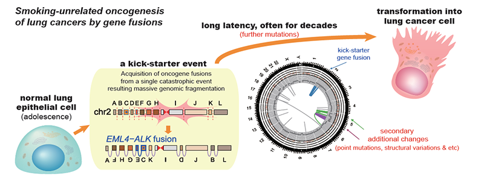

Report by Subjects
Report by Subjects
KAIST RESEARCH ACHIEVEMENTS
Tracing oncogene rearrangements underlying lung adenocarcinomas
of non-smokers
Graduate School of Medical Science and Engineering Young Seok Ju
Summary
Lung cancer is the leading cause of cancer-related deaths worldwide, and lung adenocarcinoma is its most common type. Most lung adenocarcinomas are associated with chronic smoking, but about a fourth develop in non-smokers. Precisely what happens in non-smokers for this cancer to develop is not clearly understood. We analyzed the entire genomes of 138 lung adenocarcinoma patients, including smokers and non-smokers, with whole-genome sequencing technologies and precise bioinformatics analyses. We explored DNA damage that induced neoplastic transformation and revealed that catastrophic rearrangements in the genome occurring as early as childhood and adolescence can lead to the development of lung cancer in later years in non-smokers. This finding helps explain how some non-smoking-related lung cancers develop.
Background (objectives)
Lung cancer is the leading cause of cancer-related deaths worldwide, and lung adenocarcinoma is its most common histologic type. Lung adenocarcinomas are known to be associated with chronic tobacco smoking, but approximately 25% develop in nonsmoker individuals. Underlying tumor development mechanisms (tumorigenesis) in non-smokers have not been clearly understood.
Contents
In this study, we analyzed the cancer whole-genome big data produced from 138 lung adenocarcinoma patients with precise bioinformatics interpretation. Particularly we explored cancer-specific genomic mutations that transformed normal lung epithelial cells into aggressive cancer cells. Lung adenocarcinomas that originated from chronic smoking, referred to as signature 4-high (S4-high) cancers in the study, showed several distinguishing features compared to smoking-unrelated cancers (S4-low). People in the S4-high group were largely older, male-dominant and had more frequent mutations in a specific set of cancer-related genes, such as KRAS. Cancer genomes in the S4-high group were usually hypermutated with simple mutational classes, such as base substitution, or short insertion and deletion (indel). These features imply that lung epithelial cells have been damaged for a long time by chronic exposure to tobacco smoke. In contrast, genomic landscapes in S4-low group (smoking-unrelated) were very different. Generally, mutational profiles in this group were much more silent than the S4-high group. Interestingly, a specific type of cancer-causing mutations, termed fusion genes (such as EML4-ALK and KIF5B-RET), was exclusively observed in the S4-low group. The patterns of genomic rearrangements underlying these fusion-genes in our cohort suggest that about three in four cases of oncogene fusions in lung adenocarcinoma develop from a single cellular catastrophic event (such as chromothripsis, chromoplexy, and others).

Currently the molecular characteristics of these catastrophic events are largely unknown, but these cellular crises are possible to cause massive fragmentation of cellular DNA in normal lung epithelium, followed by imprecise DNA repair processes then often ending up with fusion gene formation. More intriguingly, we identified that these major genomic rearrangements, which led to the development of fusion-genes in lung adenocarcinoma, are very likely to be acquired decades before cancer diagnosis, often ~30-40 years earlier, therefore in childhood and adolescence. Our genome analyses thus indicate that mutant lung cells, which are seeds of cancers harboring oncogenic rearrangements in the genome, remain indolent with normal cell-like features for several decades until further supplementary mutations accumulate for sufficient progression into cancer. We used the statistical genomics approach, termed ‘genomic archaeology techniques’, to trace the timing of mutation.
Expected effect
In this study, we revealed genomic landscapes of nonsmokers’ lung adenocarcinomas in a population scale for the first time. We hope that this work will help to get one step closer to precision medicine for lung cancer patients. We plan to further focus on the molecular mechanisms which stimulate complex rearrangements in the body, through screening the genomic structures of fusion-genes in other cancer types as well.
Research Outcomes
[Paper] Lee JJ, Park S, Park H, Kim S, Lee J, Lee J, Youk J, Yi K, An Y, Park IK, Kang CH, Chung DH, Kim TM, Jeon YK, Hong D, Park PJ, Ju YS*, Kim YT*, “Tracing oncogene rearrangements in the mutational history of lung adenocarcinoma”, Cell 177(7):1842-1857 (2019) [2018 IF=36.216]
Research Funding
This research was supported by the Korea Health Technology R&D Project through the Korea Health Industry Development Institute, which was funded by the Ministry of Health & Welfare of Korea (HI16C2387 and HI17C1836).
Young Seok Ju is a scientific fellow at the Suh Kyungbae Foundation (SUHF-18010082) and at the POSCO TJ Park Foundation.